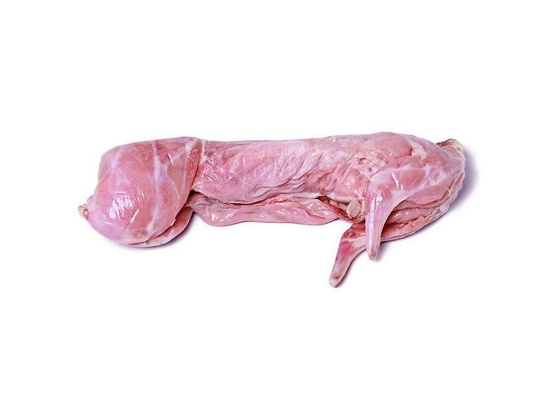

КрольчатинаМясо кролика
950
руб./кг
Свежая охлажденная тушка молодого кролика (средний вес около 2 кг). Нежное гипоаллергенное мясо свободного выгула по технологии Михайлова. По желанию сделаем разделку на порционные куски (+100 рублей).